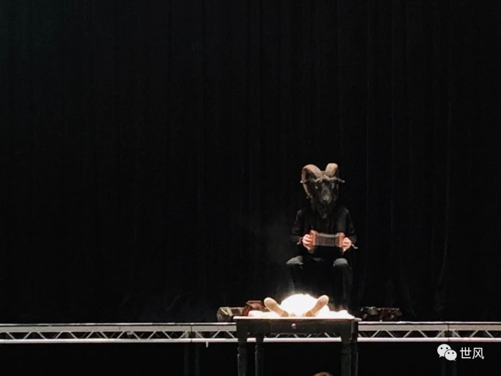

肺炎日记丨1月26日：研究揭开肺炎扩散冰山一角
原文链接 备份链接 【财新网】（记者 黄蕙昭）从全国看，疫情还处于早期散发阶段。国家卫健委主任马晓伟在1月26日下午国务院新闻办举行的发布会上表示。截至1月26日20时，中国确诊新型冠状病毒肺炎病例2058例，其中湖北1052例，而非湖 …
这是一封伦敦的来信。
作者是在英的老朋友，武汉人。
如她所说，现在像是无法返巢的候鸟。

黑山羊。六角手风琴。烟雾。
穿着白色长裙的小女孩从舞台中央站立起来。年长的人们摘下黑面罩。幕布被掀开。海洋气味的雨水从混合的乐声中弥散开。舞者在自发式的身体区域释放出浓烈的感情。试探，坠入，欲，憎，宽恕。相恋的人赤脚走过连排坐下的集合体；他们拥吻在一起，仿佛站在虚妄的山峰顶端——一，二，三，跳！继而拥抱着坠倒在地。他们笑了，我也笑了。
吉格舞，吉格舞。好像旋转的是附着在以太上的衣衫，伞裙像蘑菇，雨落下来，它们奋勇着生长。河水把脚浸湿了。黑暗替我遮挡着沉浸其中的笑。我望着白色幕布上旋转的黑影；光是温暖的黄，那一刻，我仿佛遇见了神灵。
导演在演出后的答观者问说，他的编舞中有许多的即兴元素；威廉·布雷克常提到纯真与想象力，人保持着天真烂漫，便会看到一个无穷想象的世界。这世界，无忧无虑，令人着迷。舞蹈的最后一幕，鼓风机响了起来，高光，黄色烟雾，冰凉的风吹拂在我脸上，我感到好幸福。
九点半，走在黑夜里，我拿着手机发信息。我告诉回到国内的他我看了一个很棒的舞蹈演出。路灯代替了白昼的太阳，人们开始忘记向神祇祈祷黎明。我望着街道上向往夜生活的人群，没有一个亚洲面孔。
晚饭后，中国朋友嘱咐我看完演出后，晚上要早点回家。我对于自己沉浸式的幸福感感到一阵来自道德审查制的批判。点开朋友圈，打开群聊、网上论坛、社交网站，中文字集结式地在对同一样正在发生的事件展开议论——网络时代的多元化，在这一刻，竟达到了高度可调节的统一。
我有些愧疚。我的朋友圈从一月一日开始便没有更新了。不发一言的朋友圈，仿佛把我塑造成了一个徒手旁观的人。苟且、自私、冷漠。甚至不用复杂的逻辑推导，便能在脑海中蹦出这些僵化的词汇。幼小的幸福也因为这强大的无力感而演化为痛苦。羞耻，忧惧，无以言表的愤怒折磨着我。自从疫情全面爆发之后，我每晚失眠到凌晨四、五点。黑暗中，每小时拿起手机一次，把飞行模式调为4G，看疫病的科学分析，防控措施，民生问题，医疗布局。
我是武汉人。这是社会重大事件离我最近的一次。而我身处伦敦。除了八小时的时差之外，更重要的是心理状况的偏差。我甚至不敢点开国际航班禁飞中国的公司列表。从疫情爆发到现在，我没有为此掉落一滴眼泪。人一慌乱，“事件场域”便会发生海啸。我需要冷静的头脑像机器一般，从庞杂的网络信息中抽剥出精准资料，做可行性方案，然后慢条斯理地支持武汉的家人、亲戚、朋友，以及安慰伦敦因疫情感到焦虑的中国同学。我像一只候鸟，因为未能及时返巢，不得不殚精竭虑，草木皆兵。
一月二十二日，我在餐厅吃午饭，邻桌的两位中国女生高声谈论着新冠状病毒肺炎的爆发与一个叫做“华南海鲜批发市场“的关系。在国外，在公众场合忽然听人提及“武汉”，让我感到有些意料之外。我终于不用一遍遍地讲述“东湖”、“武大樱花”、“热干面”。“华南海鲜市场”？这个名词我有些陌生，细想之后，好像曾经在那里买过螃蟹。
一月二十三日，外国朋友问我家人情况如何。我不喜欢和人过多谈论隐私，于是淡淡地回答“谢谢关心”。上完课，回到家，我打开电脑迅速查看中国官方网络信息，又在公众号里翻了数页文章。解决了“新型冠状病毒肺炎”的知识论问题，我开始罗列防御措施，诸如口罩、酒精、有可能性的特效药、有效食物和应急物品。父母每日六点起床，伦敦时间十点，我和父母通话。他们很轻松地说，一切都好，物资都准备齐全了，也答应我春节期间不会出门。我开始失眠，凌晨四点入睡。第二天早晨需要九点前起床出门去上课。
一月二十四日，除夕。中国朋友开始互相关心。见不着面、见得着面的人都会通过不同的途径传达彼此对于疫情的关注。我心不在焉地吃过晚饭后，开始更大范围地搜索疫情新闻。朋友圈、信息群、门户网站、各式论坛。像读科研文章一样，我一刻不轻懈地浏览了我能获取的所有信息。科普、调查、争议。信息在爆炸，呈几何式增长。我像幼小的、被海浪裹挟昆虫，缩瑟在电脑屏幕前，屏气凝神；仿佛稍稍失去了竭力保持的平衡，我便会随波逐流，埋在这巨浪里。在链式反应的病疫面前，个体的英雄主义变成无谓的浪漫。除了沉默，我还能够做些什么。
一月二十五日，老范约我吃饭，我说我需要冷静。在她的督促下，我网购了N95医用口罩。包裹到达用了三天，我连拆开的精神都没有。只是包裹在那里，心理上总算有了一些安慰：我终于和武汉的家人有了共同的联结。伦敦寻常生活的安逸让人无法捕捉到武汉实施交通管控的居民生活异化。我提醒家人备好长时间不出门的粮食和基本医疗物资。又嘱咐没有认真对待疫情严峻性的武汉朋友尽量不要出门。我甚至提出让他烧一柱网络电子香。人类面临突如其来的艰难处境，第一反应，是无问因果的迷信。
接下来的几日，时间开始扭结为线团。外国同学礼貌性地问我好不好，我说一切还好。中国同学问我武汉情况如何，我说一切还好。老范约我吃饭，我已推脱数日，以写论文为缘由，将自我隔离。一方面，独处让我可以更客观地搜集信息，分析疫情的走向，替武汉的家人做好防御规划；一方面，我需要从心理层面理解国内人们此时的状况，推导除却医疗之外还有哪些社会性问题的产生会影响家人的生活。
我不是社会学学者，没有充足的理论知识，可是面对疫情，因由对家人朋友的关心，对家乡的惦念，让我成为了社会议题的专家。我的敌人不是有形之物，而是变异的、传染性极高的、学会以无症状宿居的致命病毒。我有背城一战的勇气，却没有使其溃不成军的能力。老范再三通过微信询问我的状况，让我有事和她说。她那么柔弱的女生，因为了解我是一个什么事都自己先扛着的人，这种时候也为了替我分担而变得坚强。然而，我仍旧回答道，一切还好。在爱的人面前，我是幼稚的好哭鬼。可在疫情面前，我无法享受柔弱。即使个体的内化波动像病危患者的心电图一般举足无措，当人们投以注目各怀心事地询问你道，你还好吗，我仍旧以一副无忧无虑的面容，笑着回答道，我很好，谢谢。
新型冠状病毒肺炎持续在日常生活中无差别地传播，“新型冠状病毒肺炎”的关键词也在通讯、媒体中高速繁衍。病毒从疾病扩展为一个抽象概念，它像一记索引，揭开了广义社会结构中许多被平凡日子里繁忙的规律起居所忽视的问题。像唯实论寻找事物差异一般，来自社会不同背景的人开始对诸多社会现象口诛笔伐。
一方面，专业医务人员、社会基层工作者保持着理智与专业恪守在抗疫前线，履行岗位职责；一方面，无法获得恳切答案的大众因未知的事态发展感到惊慌错愕。“新冠病毒肺炎”如脱缰之马，从八法来袭，试图击破中国社会的物理防线和心理防线。筹备永远赶不上变化。想要打败病毒，首先要跟上它的速度，超过它。
二月四日，方舱医院已基本完成搭建。二月五日，肺炎轻症患者开始入住治疗。治愈人数渐渐超过死亡人数，似乎事件有了好的发展转机。然而，与此同时，二月一日，英国谢菲尔德一名中国女学生因佩戴口罩而被当地人攻击；同一天，德国《明镜》周刊将封面的新冠病毒报道冠以“中国制造”；二月五日，温哥华《省报》赫然将“新型冠状病毒”报道为“中国病毒”。全球的居民仿佛不再因时差产生分歧；一场病疫将地理因素抹去，同时掷向了正奋力抗击着病毒的中国。
二月六日，我的朋友圈以以秒激增的速率发布着同一个关键词。人们愤怒，哀惶，暴戾又无力。一向秉承着行胜于言的我，渴望从这次事件的来龙去脉中找到可以化解矛盾的方法。可这一次，我失败了。我为自己无法巧舌如簧地参与辩驳感到不齿。不合时宜的冷静，就是冷漠。有选择性地保持中立，成为一种被千夫所指的逃避。我为再一次无法力挽狂澜的自己感到沮丧。从前，我们背诵《论语》，君子当修身，齐家，治国，平天下。我问自己，即使满腹经纶，饱读诗书，一支笔，真的可以抚恤这次被病毒伤害得百孔千疮的生灵吗？
剧院里，我身边的外国人在进行贴面吻。其中一个人开玩笑地说，小心传染哦。另一个人严肃地回答道，这不好笑。我坐在她们身边，忽然泪水在眼眶里打转。看剧的时候，我望着舞台上不断旋转的衣裙，试图催眠自己。穿着白色蕾丝裙的小女孩像天使，天真，轻盈，无忧无虑。疫情爆发以来，我终于将自己藏在黑暗中，像不想被人发现的小偷一样，第一次怀揣着一丝丝的对希望的想象，笑了。
夜晚，我走路回家。我的心像万籁俱寂的夜，连风的声音都呼呼作响。我对他说我看了一个很棒的剧，有雨一般的音乐，灵魂遇见了神灵。平日里，我总抱怨一天的时间太短，要做的事情还有很多没有做完。今天，我只想时间戛然而止。回到家，我机械性地打开了电脑，又开始浏览实时新闻，查询关键词。晚上十点钟，我准时给父母报了平安。这一天很漫长，我筋疲力竭，却仍旧失眠到凌晨五点。
辛梧
写于伦敦
原文链接 备份链接 【财新网】（记者 黄蕙昭）从全国看，疫情还处于早期散发阶段。国家卫健委主任马晓伟在1月26日下午国务院新闻办举行的发布会上表示。截至1月26日20时，中国确诊新型冠状病毒肺炎病例2058例，其中湖北1052例，而非湖 …
原文链接 备份链接 随着新冠肺炎（COVID-19）感染病例在近日突破 70,000 大关、中国疾控中心发迄今最大新冠病例分析、首次描述肺炎发病流行曲线，越来越多的新冠疫情爆发细节浮出水面。 与此同时，先前颇有群众基础的新冠病毒人为干预流 …
原文链接 备份链接 2 月 17 日，《中华流行病学杂志》杂志上，中国疾病预防控制中心新型冠状病毒肺炎应急响应机制流行病学组最新发表新冠肺炎研究。 在对截至 2020 年 2 月 11 日中国内地报告的 超过 7 万病例的流行病学特征进行 …
原文链接 备份链接 非常时期，武汉成了全国人民挂念、祈福的城市。封城后，武汉人民的真实生活是什么样？ 武汉在发生哪些变化？ 正和岛自1月26日起特别推出“叶青专栏”。叶青是一位定居武汉40年的市民，也是一名学者和官员。在过往多期的专栏文章 …
原文链接 备份链接 非常时期，武汉成了全国人民挂念、祈福的城市。封城后，武汉人民的真实生活是什么样？ 正和岛自1月26日起特别推出《叶青：我在武汉疫区的第N天》专栏。叶青是一位定居武汉40年的市民，也是一名学者和官员。接下来的一段时间， …